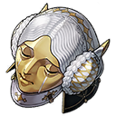

추천 광추
언제나 여정이 평탄하기를
실드량 +24% · 아군 피해 +20%
효과 자세히
아군이 실드를 보유하는 동안 피해 증가.
승리의 순간
방어력·효과 명중 +24%
효과 자세히
피격 확률 증가 · 피격 후 자신의 턴 종료까지 방어력 +24% 추가.
여생의 첫날
방어력 +24% · 팀 속성 저항 +12%
효과 자세히
전투 진입 후 팀 속성 저항 증가. 같은 유형은 중복 적용되지 않음.
랜도의 선택
피격 확률 증가 · 받는 피해 −24%
효과 자세히
다른 아군의 피격을 줄이고 장착자의 내구 보강.
우주 시장 동향
방어력 +16% · 피격 시 연소
효과 자세히
기본 확률 100% → 공격자에게 방어력 40% 연소 2턴.
추천 유물
별빛에 숨은 은둔자 4 · 부러진 용골 2
- 머리
 주옵션HP부옵션속도 · 방어력% · 효과 저항 · 효과 명중
주옵션HP부옵션속도 · 방어력% · 효과 저항 · 효과 명중 - 손
 주옵션공격력부옵션속도 · 방어력% · 효과 저항 · 효과 명중
주옵션공격력부옵션속도 · 방어력% · 효과 저항 · 효과 명중 - 몸통
 주옵션방어력%부옵션속도 · 효과 저항 · 효과 명중
주옵션방어력%부옵션속도 · 효과 저항 · 효과 명중 - 다리
 주옵션속도부옵션방어력% · 효과 저항 · 효과 명중
주옵션속도부옵션방어력% · 효과 저항 · 효과 명중 - 구체
 주옵션방어력%부옵션속도 · 효과 저항 · 효과 명중
주옵션방어력%부옵션속도 · 효과 저항 · 효과 명중 - 매듭
 주옵션에너지 회복효율부옵션속도 · 방어력% · 효과 저항 · 효과 명중
주옵션에너지 회복효율부옵션속도 · 방어력% · 효과 저항 · 효과 명중
이 조합을 추천하는 이유
은둔자 제공 실드량 합계 +22% · 실드 보유 아군 치피 +15%. 효저 30% → 용골 발동.
정토 교황의 팔라딘 4 · 바다에 잠긴 루샤카 2
- 머리

주옵션HP부옵션속도 · 방어력% · 효과 저항 - 손
 주옵션공격력부옵션속도 · 방어력% · 효과 저항
주옵션공격력부옵션속도 · 방어력% · 효과 저항 - 몸통
 주옵션방어력%부옵션속도 · 효과 저항
주옵션방어력%부옵션속도 · 효과 저항 - 다리
 주옵션속도부옵션방어력% · 효과 저항
주옵션속도부옵션방어력% · 효과 저항 - 구체
 주옵션방어력%부옵션속도 · 효과 저항
주옵션방어력%부옵션속도 · 효과 저항 - 매듭
 주옵션에너지 회복효율부옵션속도 · 방어력% · 효과 저항
주옵션에너지 회복효율부옵션속도 · 방어력% · 효과 저항
이 조합을 추천하는 이유
팔라딘 방어력 +15% · 실드량 +20%. 루샤카 회복효율 +5% 추가.
별빛에 숨은 은둔자 4 · 축성가의 벨로보그 2
- 머리
주옵션HP부옵션효과 명중 · 속도 · 방어력 · 효과 저항
- 손
주옵션공격력부옵션효과 명중 · 속도 · 방어력 · 효과 저항
- 몸통
주옵션효과 명중 / 방어력%부옵션효과 명중 (주옵션 제외) · 속도 · 방어력 · 효과 저항
- 다리
주옵션속도부옵션효과 명중 · 방어력 · 효과 저항
- 구체
 주옵션방어력%부옵션효과 명중 · 속도 · 방어력 · 효과 저항
주옵션방어력%부옵션효과 명중 · 속도 · 방어력 · 효과 저항 - 매듭
 주옵션에너지 회복효율부옵션효과 명중 · 속도 · 방어력 · 효과 저항
주옵션에너지 회복효율부옵션효과 명중 · 속도 · 방어력 · 효과 저항
이 조합을 추천하는 이유
효과 명중을 먼저 확보합니다. 벨로보그는 효과 명중 50% 이상에서 방어력이 추가로 증가합니다.
이 정도면 잘 키웠다
선택한 세팅 기준 · —는 확인된 수치 없음
보호막과 용골의 파티 치명타 피해 버프를 유지합니다.
| 스탯 | 추천 스탯 | 준종결 | 종결 |
|---|---|---|---|
| 방어력 | 3000 | — | 3000+ |
| 속도 | 134+ | — | — |
| 효과 저항 | 30%[1]부러진 용골 발동 조건. | — | 70% |
| 에너지 회복효율 | 119.44%+[2]기본 100%에 5성 +15 매듭의 에너지 회복효율 19.44%p를 더한 총량입니다. | — | — |
세팅 기준·출처
종결은 RIRA의 효과 저항을 높인 보호막 세팅 기준입니다. 공개 가이드에서 이 세팅의 준종결 수치를 확인하지 못했습니다.
방어력과 필살기 회전을 우선합니다.
| 스탯 | 추천 스탯 | 준종결 | 종결 |
|---|---|---|---|
| 방어력 | 2400~2900+ | — | — |
| 속도 | 134+ | — | — |
| 에너지 회복효율 | 124.44%+[1]기본 100%에 5성 +15 매듭의 에너지 회복효율 19.44%p와 「바다에 잠긴 루샤카」 2세트의 5%p를 더한 총량입니다. | — | — |
스탯 조건과 각주
- 에너지 회복효율 · 추천 스탯 기본 100%에 5성 +15 매듭의 에너지 회복효율 19.44%p와 「바다에 잠긴 루샤카」 2세트의 5%p를 더한 총량입니다. ↑
성혼과 추천 돌파
1돌 빙결 확률 · 4돌 파티 효과 저항 +20%.
1스킬 빙결 기본 확률 +35%p추천
근면 성실
2스킬 빙결 해제 → 속도 −20%
대상에게 1턴 적용.
3필살기·특성 +2
필살기·특성 레벨 상한 각각 15.
4파티 효과 저항 +20%추천
게파드가 필드에 있는 동안 적용.
5전투 스킬 +2 · 일반 공격 +1
스킬·일반 공격 레벨 상한 각각 15·10.
6특성 부활 시 즉시 행동
특성 회복량에 HP 최대치 50% 추가.
추천 파티


기본 운영과 행적
실드 만료 전에 필살기 재사용
필살기로 전원 보호 → 빠른 아군의 실드 만료 시점 추적 → 필요하면 전투 스킬 빙결로 위험 공격 차단.
- 승급 행적과 광추 도발치로 피격을 받으면 에너지 회전에 도움. 보호막 자체는 방어력 기준.
행적 육성 순서
필살기 → 전투 스킬·특성 → 일반 공격
아하 속도 계산기 →기준과 출처 · 2026-11-27
4.7 데이터 · Prydwen 장비 참고 · 자료실 편성 예시